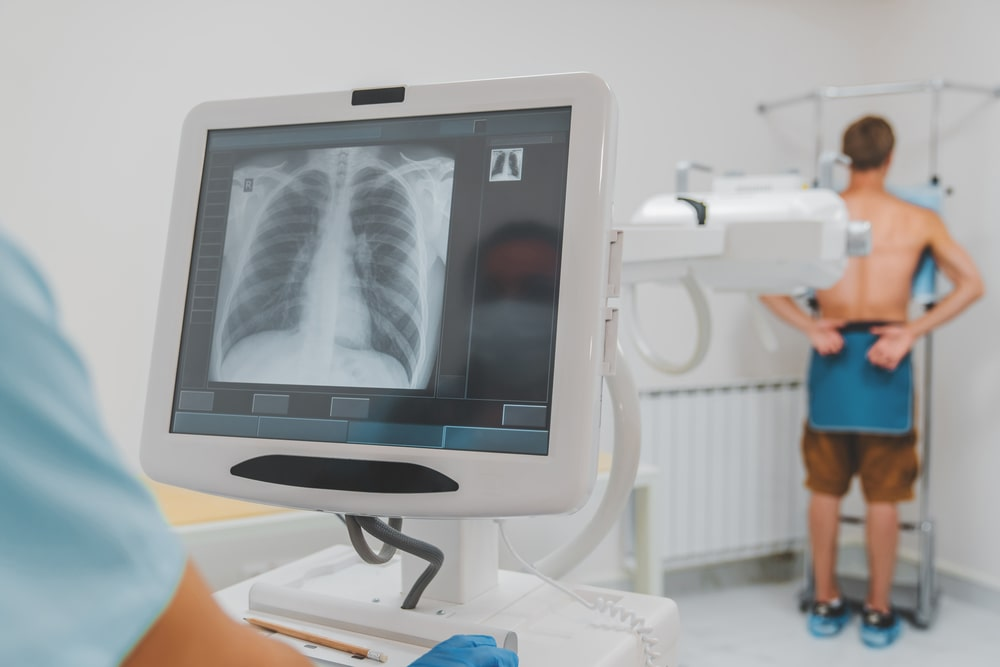

My Career Goals
My Career Technology Goals
Learn how to use:
- X-ray equipment and control panel
- PACS software
- RIS software
- EMR software
Short Term Career Goals
Graduate with >2.5 GPA in Rad Tech program
- Maintain C+ or higher in all RAD courses
- Complete 5 clinical rotations
- Earn CPR certification
- Pass the ARRT certification exam
Long Term Career Goals
Become a certified radiologic technologist
- Work as a radiographer
- Cross train in CT/MRI
- Become a lead tech
- Take on an instructor role
career goal roadmap
career goal roadmap
| Year |
Career goal |
Skills That Need to be Developed |
| 2028 |
Graduate RAD program |
Radiographic positioning |
| 2028 |
ARRT Certification |
Patient Care |
| 2029 |
Employed Radiographer |
Equipment operation |
| 2029 |
Cross train in CT/MRI |
Radiation safety |
| 2032 |
Clinical instructor |
Adaptability |
|
|
Physical fitness |
Skills That Need to be Developed
- Radiographic positioning
- Patient Care
- Equipment operation
- Radiation safety
- Adaptability
- Physical fitness
Medical Imaging

Pass the ARRT certification exam
You need to have pay an annual fee for your license.